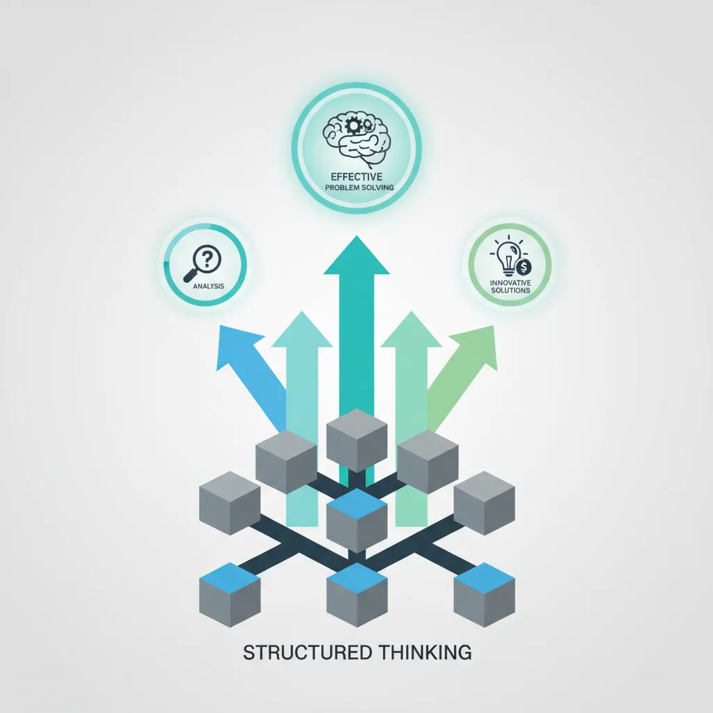
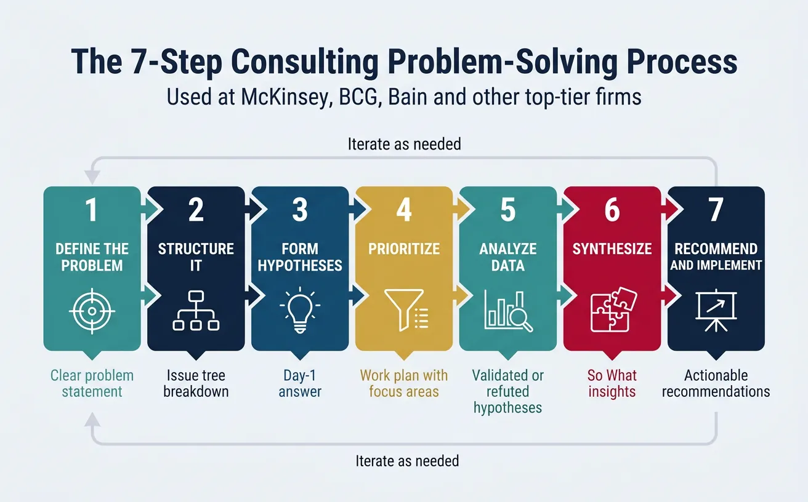
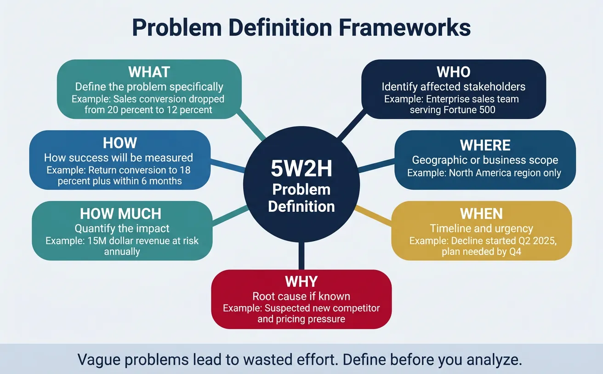
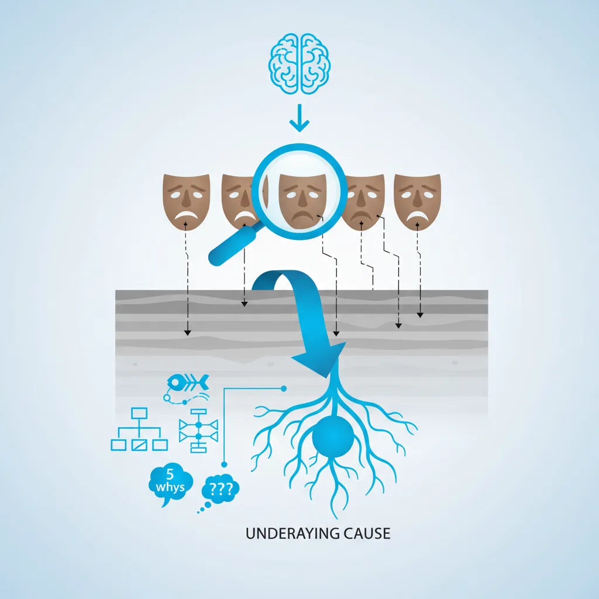

Business Strategy
Structured Problem Solving
Hypothesis-driven thinking, problem structuring, root cause analysisMECE & Issue Trees
Mutually exclusive, collectively exhaustive, logic treesStrategy Frameworks
Porter's Five Forces, SWOT, BCG Matrix, value chainMcKinsey 7S & Organizational Analysis
Structure, strategy, systems, shared values, skillsFinancial Due Diligence
Financial statements, valuation, M&A analysis, modelingClient Communication & Delivery
Pyramid principle, slide design, stakeholder managementAdvanced Frameworks (Bonus)
Blue ocean, disruption theory, scenario planningCase Interview Master Pack (Bonus)
Market sizing, profitability, M&A, pricing casesConsultant Toolkit (Bonus)
Templates, checklists, presentation frameworksKey Insight
Top consultants don't just solve problems—they structure them. The consulting mindset combines hypothesis-driven thinking with rigorous prioritization to deliver actionable insights under tight deadlines. This part teaches you to think like a McKinsey, BCG, or Bain consultant.
1. Introduction
Series Overview
Welcome to the Complete Consulting Frameworks Series—your comprehensive guide to thinking, analyzing, and communicating like a top-tier management consultant. Whether you're preparing for consulting interviews, working in strategy roles, or simply want to sharpen your business problem-solving skills, this 9-part series will equip you with the same frameworks used at McKinsey, BCG, Bain, and other leading firms.
| Part | Topic | What You'll Learn |
|---|---|---|
| 1 | Structured Problem Solving | The consulting mindset, hypothesis-driven thinking, prioritization |
| 2 | MECE & Issue Trees | Problem decomposition, structuring techniques |
| 3 | Strategy Frameworks | BCG Matrix, Porter's Five Forces, SWOT, market entry |
| 4 | Organizational Analysis | McKinsey 7S, operating models, change management |
| 5 | Financial Due Diligence | Financial analysis, valuation, PE case thinking |
| 6 | Client Communication | Pyramid Principle, executive communication, delivery |
| 7-9 | Bonus Content | Advanced frameworks, case interviews, consultant toolkit |
Why Consulting Frameworks Matter
Frameworks aren't just academic exercises—they're battle-tested tools that help you:
- Work faster: Don't reinvent the wheel; start with proven structures
- Think comprehensively: Ensure you cover all bases without gaps
- Communicate clearly: Stakeholders understand framework-based logic
- Build credibility: Using established tools signals competence
- Solve bigger problems: Complex issues become manageable when decomposed
Critical Warning
Frameworks are starting points, not answers. The best consultants customize frameworks to fit specific problems. Blindly applying a template without adapting it to context is a hallmark of inexperienced thinking. Always ask: "Does this framework fit this problem?"
2. How Consultants Think
Before diving into specific frameworks, you need to understand the consulting mindset—the mental operating system that makes frameworks effective.

Clarity Under Ambiguity
Clients typically present problems with incomplete information, vague definitions, and political complexity. A consultant's first skill is creating clarity from chaos.
The Doctor Analogy: Imagine a patient walks into a doctor's office saying, "I don't feel well." The doctor doesn't immediately prescribe medication. Instead, they:
- Ask clarifying questions (What symptoms? How long? What's changed?)
- Form hypotheses based on patterns
- Run targeted tests to confirm/refute
- Diagnose and recommend treatment
Consultants follow the same diagnostic process for business problems.
From Vague to Clear: Problem Reframing
| Vague Client Statement | Consultant's Reframe |
|---|---|
| "We need to grow." | "Increase revenue by 15% in 18 months through market expansion" |
| "Our costs are too high." | "Reduce operating expenses by $50M while maintaining service levels" |
| "Should we acquire company X?" | "Evaluate strategic fit, synergies, and value creation potential" |
| "Morale is low." | "Identify root causes of employee disengagement and implement targeted interventions" |
Hypothesis-Driven Thinking
Unlike academic research (gather all data, then conclude), consulting uses hypothesis-driven problem solving: start with a potential answer, then test it with data.
The Hypothesis-First Approach
"I believe the answer is X because of reasons A, B, C. Let me find data to prove or disprove this quickly."
Why hypothesis-first works:
- Speed: You don't boil the ocean analyzing everything—you focus on what matters
- Direction: Your team knows exactly what data to gather
- Iterative: Wrong hypotheses are quickly discarded; right ones refined
- Communicable: You can share your thinking early, even before full proof
| Hypothesis-Driven | Data-Driven (Traditional) |
|---|---|
| Start with educated guess | Start with data collection |
| Focused data gathering | Comprehensive data gathering |
| Quick iteration | Linear analysis |
| Answers within days/weeks | Answers take months |
| Risk: Confirmation bias | Risk: Analysis paralysis |
Structured vs Unstructured Thinking
Most people approach problems organically—jumping between ideas, following intuition, exploring tangents. Consultants use structured thinking: breaking problems into discrete, organized components.
Structured vs Unstructured: A Comparison
| Aspect | Unstructured | Structured |
|---|---|---|
| Process | "Let me brainstorm ideas..." | "Let me break this into 3 buckets..." |
| Coverage | May miss important areas | Ensures comprehensive analysis |
| Communication | Hard to follow logic flow | Clear, easy to follow |
| Team Work | Difficult to divide labor | Easy to assign different branches |
| Best For | Creative/artistic problems | Business/analytical problems |
80/20 Prioritization
The Pareto Principle states that roughly 80% of effects come from 20% of causes. In consulting, this means:
- 80% of a company's profit comes from 20% of customers
- 80% of problems stem from 20% of root causes
- 80% of insights come from 20% of the analysis
Consultants obsessively ask: "What's the 20% that matters?"
80/20 in Action
A manufacturing client has 50 cost categories. Instead of analyzing all 50 equally, rank them by size. Often, the top 5-10 categories represent 80%+ of total costs. Focus your deep analysis there.
| 80/20 Question | Application |
|---|---|
| What are the biggest drivers? | Focus analysis on major cost/revenue items |
| Which hypotheses have highest impact? | Prioritize testing high-value hypotheses first |
| What will executives actually care about? | Focus presentation on decision-critical insights |
| Where can we make quick progress? | Identify quick wins to build momentum |
3. The Consulting Problem-Solving Process
Every consulting engagement follows a structured problem-solving process. While firms have slightly different names, the core steps are universal.

The 7-Step Consulting Problem-Solving Process
| Step | Name | Output |
|---|---|---|
| 1 | Define the Problem | Clear problem statement |
| 2 | Structure It | Issue tree / breakdown |
| 3 | Form Hypotheses | Day-1 answer |
| 4 | Prioritize | Work plan with focus areas |
| 5 | Analyze Data | Validated/refuted hypotheses |
| 6 | Synthesize | "So what?" insights |
| 7 | Recommend & Implement | Actionable recommendations |
Step 1: Define the Problem
The most important step—and the most often skipped. A well-defined problem is half-solved.
The SMART Problem Statement:
- Specific: What exactly are we solving? Not "improve performance" but "increase sales conversion rate"
- Measurable: How will we know success? Include quantifiable targets
- Action-oriented: Implies something can be done about it
- Relevant: Solving this matters to the organization
- Time-bound: By when does this need to be solved?
Problem Statement Template
"How can [company/team] [action verb] [target metric] by [amount] within [timeframe], given [key constraints]?"
Example: "How can TechCorp increase enterprise sales win rate from 15% to 25% within 12 months, given a flat sales headcount?"
Step 2: Structure It Logically
Once you've defined the problem, break it into component parts using an issue tree. We'll cover this in depth in Part 2, but the key principles are:
- MECE: Mutually Exclusive, Collectively Exhaustive—no overlaps, no gaps
- Logic: Each branch should follow logically from the question above
- 3-5 branches: Too few misses detail; too many is unwieldy
- Actionable leaves: The bottom of your tree should be testable/answerable
Step 3: Form Hypotheses
The "Day 1 Answer"—your best educated guess before gathering data. Great consultants form hypotheses quickly and iterate.
| Good Hypothesis | Why It's Good |
|---|---|
| "Profits are declining because of price erosion in the enterprise segment" | Specific, testable, implies action |
| "Employee turnover is driven by lack of career progression" | Clear cause-effect, can be validated |
| "We should enter the German market via acquisition" | Clear recommendation, can be evaluated |
| Weak Hypothesis | Why It's Weak |
|---|---|
| "We need to improve" | Vague, not testable |
| "Something is wrong with operations" | Too broad, no direction |
| "The market is changing" | Observation, not hypothesis |
Step 4: Analyze Data
With hypotheses in hand, gather data to prove or disprove them. Key principles:
- Analyze with purpose: Don't explore data randomly—have a specific question
- Quick and dirty first: 80% accuracy in 20% of the time beats 100% accuracy in 100% time
- Multiple sources: Triangulate data from internal sources, interviews, external benchmarks
- Document assumptions: Make your reasoning transparent
Data Sources in Consulting
- Internal: Financial statements, CRM data, operational metrics, employee surveys
- Primary: Expert interviews, customer interviews, site visits
- External: Industry reports, competitor filings, market research, analyst reports
Steps 5-7: Synthesize, Recommend & Implement
Synthesis is the hardest skill—transforming analysis into insight. Ask "So what?" repeatedly:
- Analysis: "Revenue declined 10% last quarter"
- So what?: "Our enterprise segment is underperforming"
- So what?: "We're losing deals to a new competitor on price"
- So what?: "We need to differentiate on value or adjust pricing"
Recommendations must be:
- Specific: "Implement tiered pricing with 3 tiers" not "Consider new pricing"
- Actionable: Someone can act on it tomorrow
- Owned: Clear accountability (who does what by when)
- Measurable: Success criteria defined
4. Problem Definition Frameworks
Vague problems lead to wasted effort. These frameworks ensure you nail the problem definition before diving into analysis.

Problem Statement Clarity
Use the 5W2H Framework to thoroughly define any business problem:
| Question | Purpose | Example Answer |
|---|---|---|
| What? | Define the problem specifically | Sales conversion rate has dropped from 20% to 12% |
| Who? | Identify affected stakeholders | Enterprise sales team, serving Fortune 500 clients |
| Where? | Geographic/business scope | North America region only |
| When? | Timeline and urgency | Decline started Q2 2025; board expects plan by Q4 |
| Why? | Root cause (if known) | Suspected: New competitor, pricing pressure |
| How much? | Quantify the impact | $15M revenue at risk annually |
| How? | How success will be measured | Return conversion to 18%+ within 6 months |
Scope Boundaries
Consulting projects fail when scope creeps. Define boundaries explicitly:
Scope Definition Template
| Dimension | In Scope | Out of Scope |
|---|---|---|
| Geography | North America | EMEA, APAC (separate initiative) |
| Products | Enterprise software suite | Consumer apps, services |
| Functions | Sales, Marketing | Product development, IT infrastructure |
| Time horizon | Next 12 months | Long-term strategy (3-5 years) |
| Decision rights | Recommend to SVP Sales | Board-level capital decisions |
Success Metrics (KPIs)
Define how you'll measure success before starting work. Use the SMART criteria for each metric:
| Metric Type | Example | Why It Matters |
|---|---|---|
| Outcome metric | Conversion rate increases to 18% | Measures ultimate goal |
| Lead indicator | Qualified pipeline increases by 30% | Early signal of progress |
| Process metric | Sales cycle reduced to 45 days | Measures execution quality |
| Guardrail metric | Customer satisfaction stays above 4.2 | Ensures no unintended harm |
Structure a complex problem clearly before solving it. Define scope, stakeholders, constraints, and success criteria. Download as Word or PDF.
All data stays in your browser. Nothing is sent to or stored on any server.
5. Prioritization Frameworks
With limited time and resources, focus is everything. These frameworks help you work on what matters most.
Impact vs Effort Matrix
Plot initiatives on a 2x2 matrix to prioritize quickly:
Impact vs Effort Matrix
| Low Effort | High Effort | |
|---|---|---|
| High Impact | Quick Wins Do immediately |
Strategic Bets Plan carefully |
| Low Impact | Fill-ins Do if time permits |
Time Wasters Avoid or eliminate |
How to use it:
- List all potential initiatives
- Score each on impact (1-5) and effort (1-5)
- Plot on the matrix
- Start with Quick Wins, then sequence Strategic Bets
Pareto Principle (80/20 Rule)
In any data set, look for the vital few that drive the majority of outcomes:
| Business Area | 80/20 Application |
|---|---|
| Revenue | 20% of customers = 80% of revenue → Focus retention efforts there |
| Costs | 20% of cost categories = 80% of spend → Deep-dive those first |
| Defects | 20% of defect types = 80% of quality issues → Fix those first |
| Employee issues | 20% of managers = 80% of turnover → Investigate those managers |
| Analysis time | 20% of analysis = 80% of insights → Know when to stop digging |
Quick Wins vs Strategic Bets
Balance your portfolio of initiatives:
| Characteristic | Quick Wins | Strategic Bets |
|---|---|---|
| Timeframe | 0-3 months | 6-24 months |
| Investment | Low (<$100K) | High ($1M+) |
| Risk | Low (proven approaches) | Higher (transformational) |
| Purpose | Build momentum, credibility | Step-change performance |
| Example | Standardize sales scripts | Redesign go-to-market model |
The Rule of Threes
A balanced recommendation typically includes: 2-3 Quick Wins (show progress fast) + 1-2 Strategic Bets (drive real transformation). This gives clients early victories while building toward larger goals.
Prioritize initiatives using an impact vs. effort matrix. Enter up to 8 items and score them. Download as Excel or PDF.
All data stays in your browser. Nothing is sent to or stored on any server.
6. Root Cause Analysis Tools
Symptoms are easy to spot; root causes are hard to find. These techniques help you dig beyond the obvious to understand why problems exist.

The 5 Whys Technique
Developed by Toyota, the 5 Whys technique involves asking "why?" repeatedly until you reach the root cause. Usually, 5 iterations are enough.
5 Whys Example: Declining Customer Satisfaction
| Level | Question | Answer |
|---|---|---|
| Why 1 | Why is customer satisfaction declining? | Customers wait too long for support responses |
| Why 2 | Why do customers wait too long? | Support ticket backlog is growing |
| Why 3 | Why is the backlog growing? | We don't have enough support agents |
| Why 4 | Why don't we have enough agents? | We've had high turnover (40%) |
| Why 5 | Why is turnover so high? | Root cause: Below-market pay & limited growth path |
Insight: The surface symptom (customer satisfaction) traces back to an HR/compensation issue. Fixing customer support processes without addressing retention would be treating symptoms, not causes.
5 Whys Pitfalls
- Stopping too early: "Because we don't have budget" isn't usually a root cause—why don't you have budget?
- Single path: Problems often have multiple causes; explore branches
- Blame game: Focus on systems, not individuals
Fishbone Diagram (Ishikawa)
Also called a cause-and-effect diagram, the fishbone organizes potential causes into categories. The "6 Ms" are common categories for manufacturing/operations:
| Category | What It Covers | Example Questions |
|---|---|---|
| Man (People) | Skills, training, motivation | Are staff trained? Motivated? Adequate headcount? |
| Machine | Equipment, technology, tools | Are systems working? Up to date? Properly maintained? |
| Material | Inputs, supplies, data | Are inputs quality? Available on time? Complete? |
| Method | Processes, procedures, SOPs | Are processes defined? Followed? Efficient? |
| Measurement | Metrics, feedback, visibility | Are we measuring the right things? Accurately? |
| Mother Nature (Environment) | External factors, conditions | Market conditions? Regulations? Seasonality? |
For service industries, alternative categories include: Policies, Procedures, People, Plant (facilities).
Constraint Analysis (Theory of Constraints)
Based on Goldratt's Theory of Constraints, this approach identifies the single biggest bottleneck limiting system performance.
The Chain Analogy
A chain is only as strong as its weakest link. Strengthening any link except the weakest one doesn't improve the chain. Similarly, improving any business process except the constraint doesn't improve overall performance.
The 5 Focusing Steps:
- Identify the constraint (what's limiting throughput?)
- Exploit the constraint (maximize output of the bottleneck)
- Subordinate everything else (align other processes to support the constraint)
- Elevate the constraint (invest to expand capacity)
- Repeat (the constraint will shift—find the new one)
Constraint Analysis Example: Restaurant Service
Symptom: Customers complain about slow service
Analysis: Map the service flow—greeting → seating → ordering → cooking → serving → payment
Finding: Kitchen (cooking step) is the constraint—orders stack up waiting for preparation
Action: Before adding servers or hosts (non-constraints), focus on kitchen efficiency: streamline menu, add equipment, improve layout
7. Conclusion & Next Steps
You've now learned the consulting mindset that underlies all framework application:
- Create clarity from ambiguity through precise problem definition
- Think hypothesis-first rather than boiling the ocean with data
- Structure problems into logical, actionable components
- Prioritize ruthlessly using 80/20 and impact/effort analysis
- Dig to root causes rather than treating symptoms
Practice Exercise
Pick a real problem you're facing (work or personal). Apply the consulting process:
- Write a clear problem statement using 5W2H
- Form 3 hypotheses about the root cause
- Apply the 5 Whys to your top hypothesis
- Use the Impact/Effort matrix to prioritize potential solutions